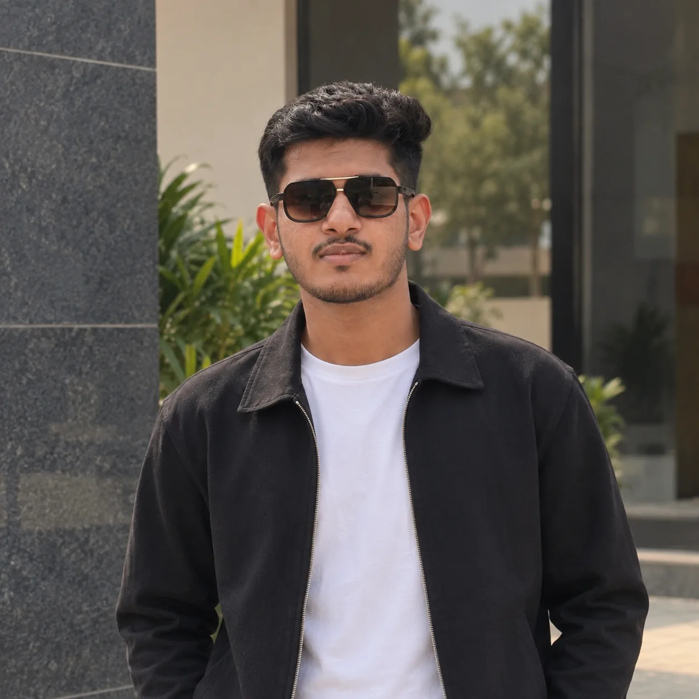

JUN 2026 — PRESENT
Software Developer Intern
Tech Modulus
AI ENGINEER / MUMBAI, INDIA
I build machine learning systems from feature engineering through APIs and cloud deployment.
Recent work: churn prediction, clinical voice analysis, retrieval-backed Q&A, and conversation analytics.

I work across model development and deployment: building text and tabular pipelines, RAG applications, APIs, and the cloud setup behind them.
My projects combine supervised learning and NLP with Python, FastAPI, LangChain, vector stores, Docker, and AWS. I’m studying computer science with a specialization in AI and machine learning.
Tech Modulus
APPLIED ML · NLP · GENERATIVE AI
From conversational data to clinical signals and production APIs, each project connects model work to a usable system.
PREDICTIVE MODELING · AWS DEPLOYMENT
An end-to-end classification pipeline and serving platform designed to identify customers at risk of leaving.
Problem Predict churn in a dataset of 50,000 customer records with 92% class imbalance.
Approach Applied SMOTE and engineered 30+ features from behavioral and billing data, then refined an XGBoost classifier.
Architecture A Dockerized FastAPI service, Jenkins CI/CD, GitHub Actions build checks, and AWS infrastructure provisioned with Terraform.
Result 93.2% accuracy, 0.91 AUC-ROC, and 88% recall. The resume reports 1,000+ predictions/hour, under 200ms P99 latency, and 99.2% uptime over 30 days.
LLM ORCHESTRATION · GITOPS
A context-grounded question-answering system that retrieves information from YouTube video transcripts.
Approach Connected LangChain orchestration to Qdrant and FAISS indexing, with the Claude API generating context-aware answers.
Deployment Streamlit frontend containerized with Docker and deployed on AWS; ArgoCD enabled GitOps-based continuous deployment.
Result Manual evaluation reported 92% answer relevance and hallucinations reduced from 42% to 9%. The deployed system sustained 150 active users with 98.5% uptime.
SIGNAL PROCESSING · ENSEMBLE LEARNING
An acoustic classification workflow using engineered voice features and an ensemble model on clinical samples.
Approach Extracted 15 acoustic features—including pitch, jitter, shimmer, and MFCCs—from 500+ clinical samples.
Architecture Random Forest and SVM ensemble classifier. Feature selection reduced dimensionality by 65% while maintaining model sensitivity.
Result 89% sensitivity, 87% specificity, and 0.91 AUC-ROC against a 0.78 baseline. Inference latency fell from 120ms to 45ms. Docker enabled portable deployment.
NLP · STREAMLIT
Interactive, per-user and aggregate analytics for exported conversations, including temporal patterns, engagement, media, and word frequencies for Hindi-English code-mixed text.
Pipeline Regex-based preprocessing with extracted temporal and linguistic features, plus custom stop-word filtering for Hindi-English code-mixed text.
Interface Streamlit dashboard for message volume, word counts, media and link detection, engagement ranking, and wordcloud visualization.
Implementation Modular preprocessing.py, helper.py, and app.py architecture; the resume reports processing 5,000+ messages in under two seconds.
Case studies summarize the scope and results documented in my resume.
A working toolkit, organized by where it fits.
TensorFlow · Scikit-learn · Pandas
Supervised learning · Deep learning
Ensemble methods · Feature engineering
LangChain · RAG · NLP
Qdrant · FAISS
Python · FastAPI · Node.js · SQL
REST APIs · Streamlit
AWS · Terraform · Docker · Kubernetes
JavaScript · React · HTML · CSS
ArgoCD · Jenkins · GitHub Actions
CI/CD
MUMBAI, INDIA
Specialization in AI & Machine Learning
M.H. Saboo Siddik College of Engineering
GET IN TOUCH
For conversations about AI, machine learning, and backend systems, reach me here:
shaikhosamah2005@gmail.com Download the full resume